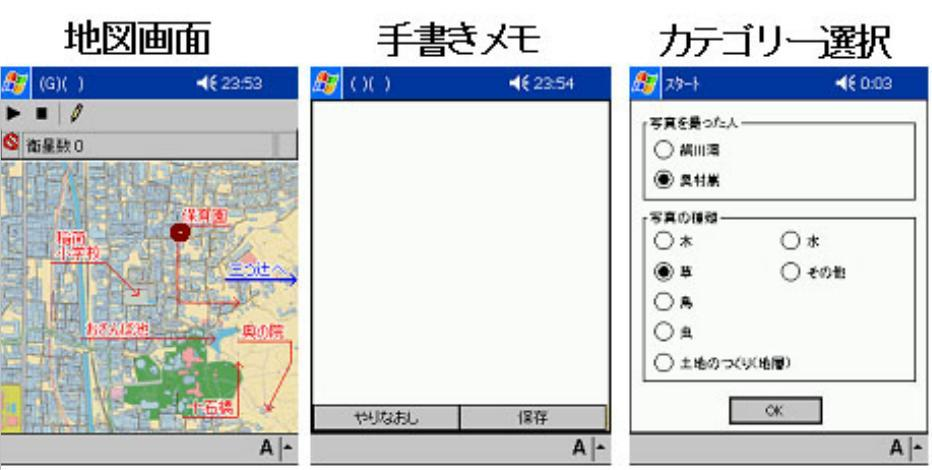
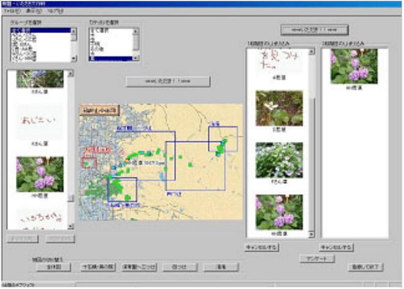
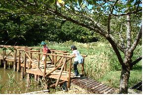
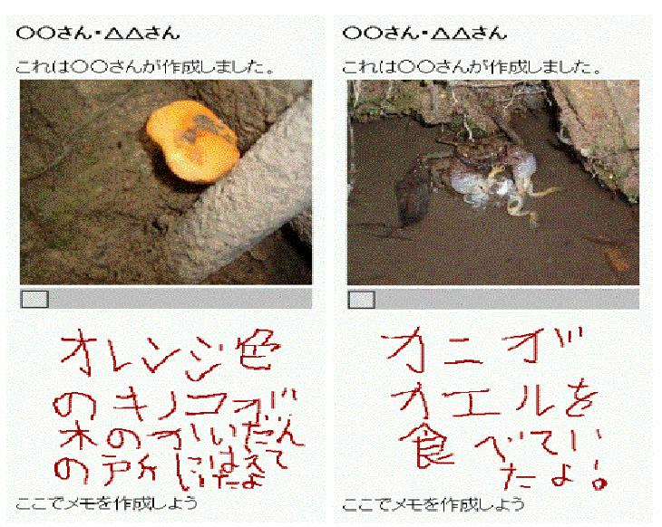

1. Implementation at Kyoto Municipal Inari Elementary School
With the cooperation of Kyoto Municipal Inari Elementary School, we installed a system developed to support ÅgPeriod for Integrated Study,Åh a couse on the environment. The Inari Elementary School is located close to Mt. Inari, which hosts the Fushimi Inari Shrine. The learning theme for 2003 was ÅgThe Inari Community & the Mt. Inari Nature Expedition.Åh Students wander around Mt. Inari to collect materials for their presentations. After deciding on a theme, each student examines the collected materials, learns about them, exchanges opinions, and makes a presentation. The support system consists of research assistance such as recording observations and taking pictures in the field, and information exchange assistance such as examining and sharing the collected materials.
The research assistance involves the use of PDAs, GPS, and digital cameras and remodels the interface of the environmental learning support system for students as Fig.1 shows. There are three kinds of screens: a basic screen to show the current location on the map, a handwritten memo screen to input research contents, and a screen to register research contents in accordance with the category. When the student finds something of interest while walking in the field, she takes pictures with digital cameras, calls up the handwritten memo screen, and draws memos on the white board provided by the memo screen. Tapping the save button, loads a category registration screen. The research contents can be registered by tapping a radio button. Pictures and observation records will be accumulated together with the location and time. As Fig.2 shows, the information exchange system searches the saved files of images and handwritten memos from maps or categories, displays thumbnails (on the left side of Fig.2), and saves (on the right side of Fig.2) interesting memos and pictures for our own study.
An evaluation after the implementation confirmed good subjective evaluations of operationality, function, and enjoyment. We can conclude that this system has the minimum functionality needed to collect and share information without any stress. This experiment demonstrates that research and information exchange via information devices is useful in assisting students to decide their learning themes and in urging them to share perspectives with their friends. Our discussion with teachers has led us to make and revise teacherÅfs support software for creating teaching materials and to analyze studentsÅf behavior locus and operation logs.
Å@
Fig.1. Screen shots of the research assistantÅ@Å@Å@Fig.2. Screen shot of the information exchange system
2. Implementation at Kyoto City Field Education Center
In Kyoto City, the fifth graders visit ÅgOkushima Misaki no Ie,Åh a Kyoto City Field Education Center every year to gain experience in natural experiments. The students form groups and take maps and a sheet of paper describing a particular problem. They then solve the problem by confirming learning points using inforation collected from Urayama. This project is called ÅgUrayama Walking Rally.Åh We applied the environmental learning support system to this project. The two students in each team (Fig.3) follow a roughly circular course. GPS location information is used to automatically trigger a display of the theme of the problem when the students approach a learning point. While solving the problem, the students make observation records (Fig.4) on the way to the halfway point. At the halfway point, we collect the observation records, select appropriate records for teachers to use as teaching materials, add them as new teaching materials, and share data. The students' PDAs are then uploaded with new teaching materials and the rest of the walking course is completed. A new problem is displayed at the learning points and observation records are again made. In addition, new observation records of other students are also displayed and they can experience sharing the other studentsÅf perspectives.
After this project, we surveyed the students. ÅgDid you find objects in the observation record?Åh 80% of the students responded, ÅgWe found most of them,Åh or ÅgWe found many of them.Åh ÅgWere the contents of the observation record helpful for you in observing nature in Urayama?Åh Close to 90% of the students responded, ÅgThey were very helpful,Åh or ÅgThey were somewhat helpful.Åh Consequently, this project suggests that it is useful to provide an environment based on PDAs and GPS for making and sharing observation records in the field.
Å@
Fig.3. Photo of this projectÅ@Å@Å@Fig.4. Examples of observation records
Publications:
Tomohiro Osaki, Naoki Yasukawa, Mitsutosi Abe, Kazuyuki Moriya,Tetsuro Sakai: "A Study to Support the Individual Problem Determination of Students during the "Period for Integrated Study""(Written in Japanese), The Transactions of Human Interface Society, Vol. 6, No. 2, pp.49-55, 2004.
Naoki Yasukawa, Tomohiro Osaki, Mitsutosi Abe, Kazuyuki Moriya,Tetsuro Sakai: "Support to Create and Share the Observation Records with Mobile Devices for Environmental Education in the Natural Field"(Written in Japanese), The Transactions of Human Interface Society, Vol. 6, No. 2, pp.67-74, 2004.
Contact:
Tetsuro Sakai (Kyoto University)
sakai at i.kyoto-u.ac.jp